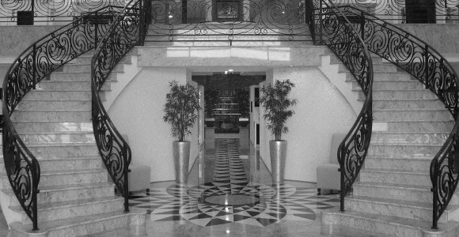
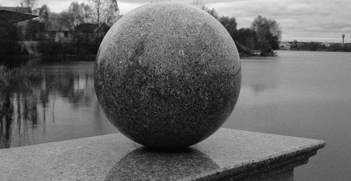
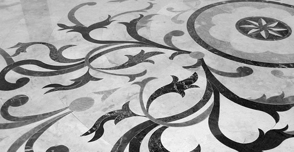
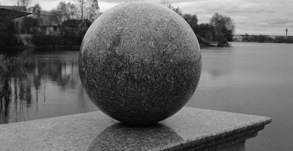
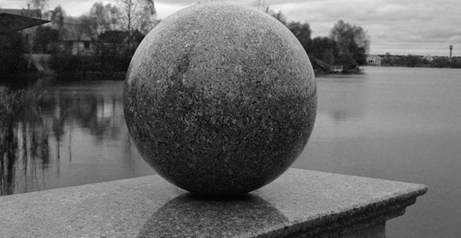

Оборудование для гидроабразивной резки позволяет осуществлять фигурную резку и производить раскрой широкого спектра материалов от пластиков до камня. Даже при раскрое такого хрупкого материала, как стекло или мрамор, гидроабразивная обработка позволяет создавать неповторимые другими технологиями контуры и формы.

Обработка камня
Натуральный камень обладает уникальной способностью создавать удивительную атмосферу благородства и уюта. С помощью технологии обработки камня создаются такие изделия как, ступеньки, столешници, подоконники, барные стойки.

Скульптинг и 3Д изделия
Технология 3д обработки камня стремительно набирает популярность у архитекторов и дазайнеров. С помощью данной технологии можно перенести на камень самую замысловатую художественную идею с мельчайшими декоративными элементами.

Мозаика и панно
Особой популярностью сегодня пользуется мозаика из камня — небольшие каменные кусочки, сложенные в настоящие произведения искусства. Мозаичные панно и полы станут идеальным выбором для оформления эксклюзивного интерьера.
Техническое оснащение
Наша компания располагает современным набором оборудования с помощью которого можно реализовать проект любой сложности.

 
